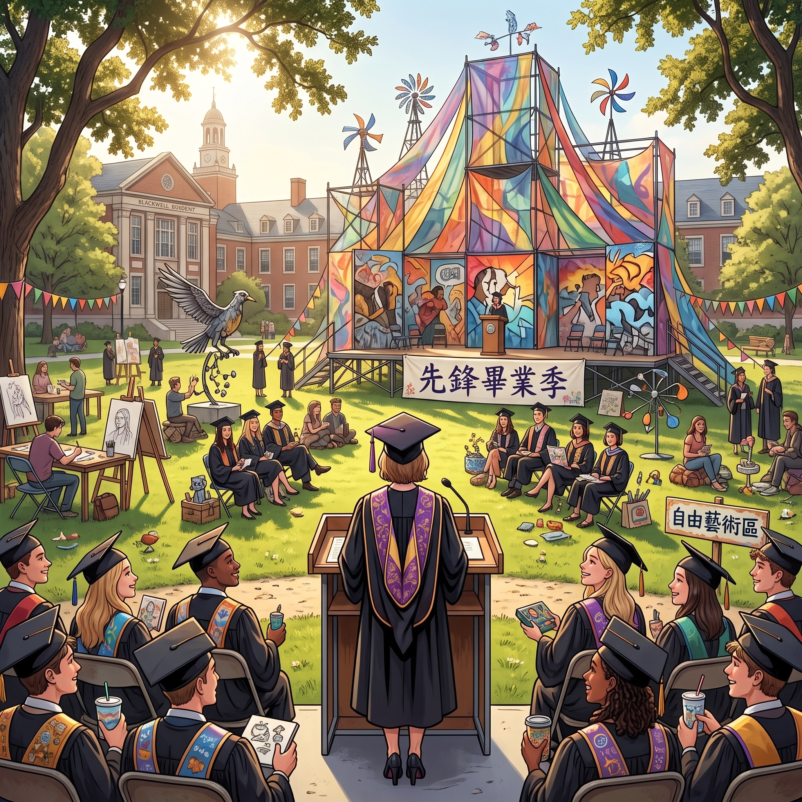

畢業典禮

陽光灑在 Blackwell 的大草坪上，這裡沒有了昔日漩渦俱樂部那種令人窒息的特權壓迫感，取而代之的是真正自由、甚至有些張狂的先鋒藝術氛圍。
一、Victoria 的畢業生代表致辭
Victoria 毫無懸念地拿下了最優畢業生。她穿著剪裁極致完美的定制學士服，站在演講台上。底下的新校董和投資人原本以為她會發表一篇標準的名媛式致辭，但她扶了扶麥克風，眼神掃過第一排的 Kate、Max 和 Chloe，冷傲地開口：
「我們曾以為 Blackwell 是一座象牙塔，但它差點成了某些人的墳墓。真正的精英，不是靠踩在弱者的脊梁上來維持優雅，而是有能力把腐爛的規則砸碎，然後重新制定標準。今天，我們畢業了；而那些只會躲在暗處的懦夫，只能在監獄裡看著我們發光。」
台下瞬間爆發出雷鳴般的掌聲，Victoria 微微揚起下巴，踩著高跟鞋走下台，把手裡的演講稿隨手扔進了垃圾桶。
二、Kate 的榮譽與聖潔的重生
當校長念到 Kate Marsh 的名字，並授予她「特殊社區貢獻與堅韌精神獎」時，全場起立。
Kate 的父母在台下熱淚盈眶，而 Kate 依然是那副溫柔恬靜的模樣。她沒有過多停留，只是在走下台階時，轉身朝著天台溫室的方向，輕輕在胸前畫了一個十字。那是獻給自己重生的禮物，也是獻給沒能走到今天的 Rachel 的超度。
三、Chloe 領取證書的朋克式暴擊
這是全場最荒謬、也最燃的時刻。
當校長捏著鼻子念出「Chloe Price」時，一個戴著學士帽、但底下依然穿著破洞牛仔褲和骷髏 T 恤的藍髮女孩大搖大擺地走上台。
她一把抓過那張全靠三個月地獄補習和超能力作弊換來的及格文憑，轉身對著台下：
她先是朝坐在後排、滿臉通紅卻拼命鼓掌的繼父 David 揮了揮那張紙——David 激動得差點把墨鏡捏碎。
然後，她猛地一把扯下學士帽，對著蔚藍的天空，雙手比出了兩根大大的中指，聲嘶力竭地喊了一句：「Rachel！老娘畢業啦！！」
整個草坪安靜了一秒，隨眾人身後的 Frank——穿著不合身的西裝——帶頭吹起了震耳欲聾的口哨。
四、Max 的快門：永遠的守望者
Max 沒有去搶風頭，她依然掛著那台拍立得。當 Chloe 在台上大吼時，當 Victoria 在台下翻白眼卻忍不住嘴角上揚時，當 Kate 雙手合十微笑時……
「咔嚓。」
Max 按下了快門。這張照片沒有經過任何回溯，因為這個瞬間已經完美得不需要任何修改。這是屬於她們的、沾滿血淚與機油味的青春勝利。
五、駛向 PNCA 的破皮卡
典禮結束後，那輛老舊的皮卡車停在校門口。車廂後面堆滿了行李、畫布、以及 Kate 培育的盆栽。
這一次，Chloe 發動引擎，沒有絕望的逃亡感，只有奔向未來的轟鳴。
「下一站，波特蘭！」Chloe 拍著方向盤，「蔡斯，妳確定妳那個什麼青年藝術雙年展的推薦名額靠譜嗎？要是敢騙 Maxine，我半路把妳丟下車。」
Victoria 坐在後座，嫌棄地拍了拍皮卡座椅上的灰塵：「閉嘴吧 Price，我的眼光比妳那顆只會算錯微積分的腦袋精準一萬倍。還有，把妳那破搖滾樂關小聲點，吵死我了。」
Kate 遞過來一盒剛烤好的小餅乾，溫柔地打圓場：「好啦，吃點餅乾吧。Max，妳要再來一塊嗎？」
Max 坐在副駕駛上，手裡拿著那張剛剛顯影完成的拍立得照片。她看著身邊大口咬著餅乾的 Chloe，聽著後座 Victoria 和 Kate 的日常拌嘴，轉頭看向窗外飛馳而過的太平洋海岸線。
她知道，前方波特蘭的 PNCA 藝術學院，那場名為《時間的殘留物：光、金屬與植物》的巔峰展覽，正在等待著她們。